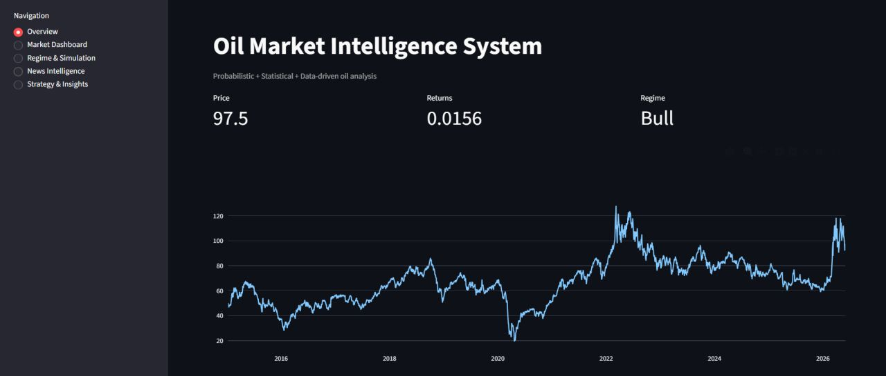
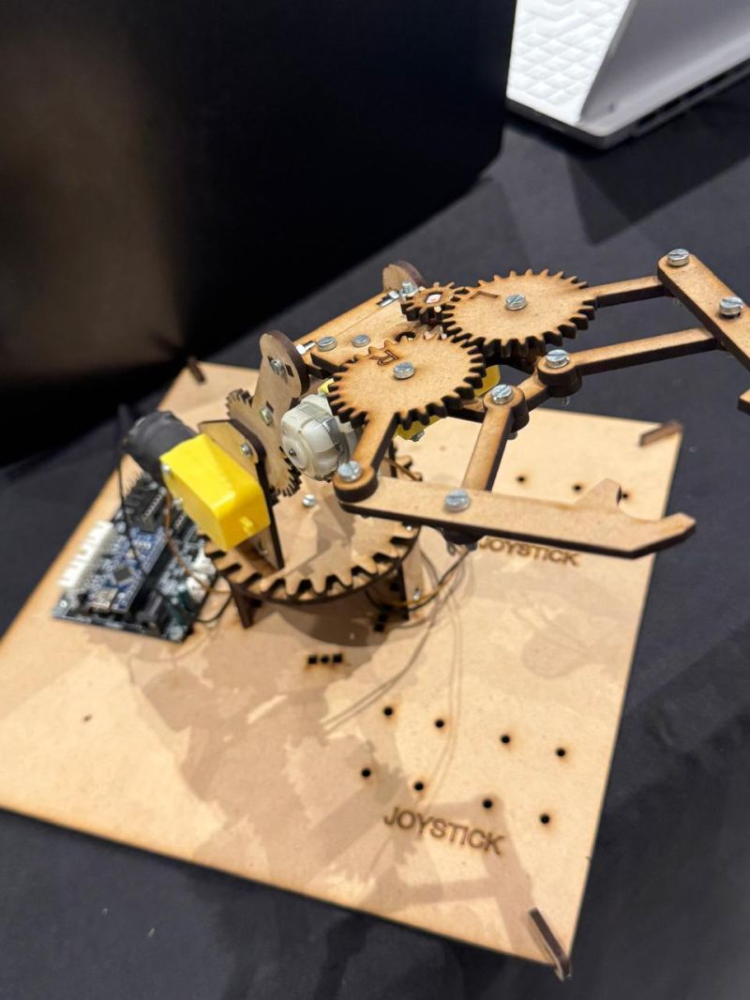

LIVE DASHBOARD CAPTUREOil Market
Intelligence System
An interactive platform combining financial data, statistics, simulation and market intelligence to study Brent crude oil.
DATA SCIENCE · FINANCE · ANALYTICS
I build analytical projects at the intersection of data, finance and technology — with a long-term goal of pursuing a career in consulting.
I'm Jaival Thakkar, a Data Science undergraduate at SVKM's NMIMS Mukesh Patel School of Technology, with a strong interest in finance, analytics and problem solving.
My long-term goal is to pursue a career in consulting, combining analytical thinking, technology and business understanding to solve complex problems.
Outside academics, I follow finance, geopolitics and sports. I enjoy taking on problems that challenge me and connect with my interests, while continuously working towards becoming a better version of myself.
Projects that turn questions into analytical systems, models and working prototypes.

LIVE DASHBOARD CAPTUREAn interactive platform combining financial data, statistics, simulation and market intelligence to study Brent crude oil.
Research on whether physical crude-oil supply variables improve AI/ML forecasts of returns and realized volatility across market regimes.
An ML-oriented market scanner and trading system currently being tested through historical backtesting.
An ongoing FOML project exploring player performance and selection using PCA, covariance, SQL and neural networks. The system is still under development; outcomes are not yet finalized.

A working Arduino-based robotic arm integrating DC motors, C++ and Python with gesture-based control for precise gripping.
Research work on matrix compression using the Discrete Cosine Transform, accepted for IESES 2025.
Finance Sub Head
Led finance-focused initiatives involving industry research, financial analysis and development of finance-related content and reports. Mentored finance executives on financial concepts, analytical approaches and research methodologies, while contributing to finance-centric events, competitions and equity-research initiatives.
Volunteer — Community Service
Contributed to a community service initiative focused on poverty alleviation among rural women through financial literacy. Used Glific, a two-way communication platform for NGOs, to train a Hindi-language chatbot that delivered financial literacy video modules with interactive quizzes. Visited the community on-site to train women on accessing and using the chatbot, and tested the solution with more than 100 women.
Financial Analyst Intern
Supported financial statement preparation, audit documentation and basic budgeting activities under senior guidance. Gained practical exposure to financial reporting, compliance procedures and accounting workflows.
Technical Documentation & Management
Working across application help-file development, technical documentation, database management and business operations. Developing structured HTML help files and documentation while working with SQL Server, Python and application workflows.
Event Coordinator
Coordinated and supported the execution of events, working with team members, overseeing logistics and helping ensure smooth event delivery. Developed organizational and communication skills through collaborative event planning.
B.TECH IN DATA SCIENCE
July 2024 — June 2028 · 8.34 GPA
IN PROGRESS · COMMODITY MARKETS
Assessing the impact of supply-chain dynamics on price movements and volatility forecasting. The objective is to test whether adding physical crude-oil supply variables improves AI/ML forecasts of returns and realized volatility, and whether the gains vary across market regimes.
CONFERENCE RESEARCH · IESES 2025
Research work on matrix compression using the Discrete Cosine Transform, accepted for the 4th IEEE International Conference on Industrial Electronics for Sustainable Energy Systems (IESES 2025), held 22–24 September 2025.
Conference website ↗Python · C++ · SQL · HTML · JavaScript
Pandas · NumPy · Scikit-learn · Statsmodels · Neural Networks · PCA
Financial Analysis · DCF · Market Research · Technical Analysis · Statistical Modelling
Excel · MS Office · SQL Server · Streamlit · Git · Screener
LET'S CONNECT
I'm always interested in thoughtful conversations around data, finance, technology and business.